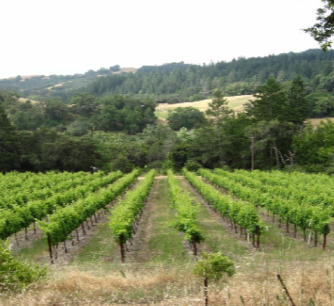

This is a nice hillside site with good southern exposure in Dry Creek Valley. We practice fruit thinning for quality grapes. We are committed to sustainable farming practices and good soil fertility.

Image and info taken from GPV Vineyard Resume by Nick Brodrick